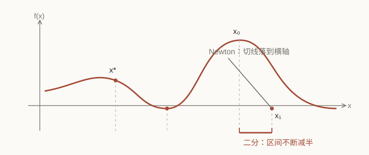
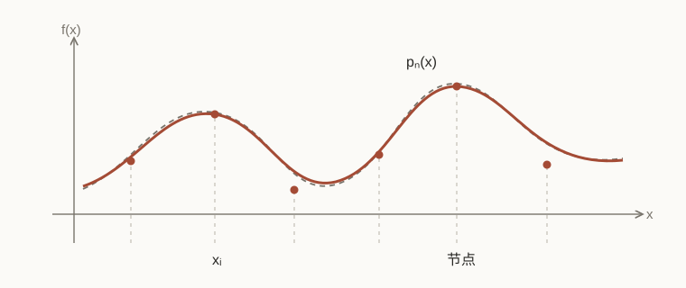
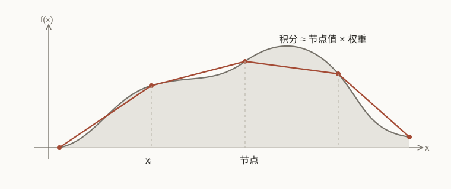

Study note / 2026-09-13
数值分析
求根、插值、样条、差分和积分。
先放一页总览，再把常用的式子排在一起。
1. 求根

二分法保住区间，Newton 法沿切线走。
先解 \(f(x)=0\)。二分法要求 \(f(a)f(b)<0\)，每次留下符号相反的一半：
\[m_k=\frac{a_k+b_k}{2},\qquad
|m_k-x^\ast|\leq\frac{b-a}{2^{k+1}}.\]
Newton 法用切线：
\[x_{k+1}=x_k-\frac{f(x_k)}{f'(x_k)}.\]
割线法不求导：
\[x_{k+1}=x_k-f(x_k)\frac{x_k-x_{k-1}}{f(x_k)-f(x_{k-1})},
\qquad p=\frac{1+\sqrt5}{2}.\]
固定点迭代写成 \(x=g(x)\)。解附近若 \(|g'(x)|\leq q<1\)，就会收敛。初值和 \(g\) 的选法，常常比公式本身更要紧。
2. 插值

节点给出以后，曲线只是其中一种重建方式。
Lagrange 形式：
\[\ell_i(x)=\prod_{j\ne i}\frac{x-x_j}{x_i-x_j},\qquad
p_n(x)=\sum_{i=0}^{n}f(x_i)\ell_i(x).\]
Newton 形式方便逐点添加数据：
\[p_n(x)=f[x_0]+\sum_{k=1}^{n}f[x_0,\ldots,x_k]
\prod_{j=0}^{k-1}(x-x_j).\]
余项：
\[f(x)-p_n(x)=\frac{f^{(n+1)}(\xi)}{(n+1)!}
\prod_{i=0}^{n}(x-x_i).\]
等距节点的高次插值可能出现 Runge 现象。Chebyshev 节点把点往端点附近挤：
\[x_i=\cos\frac{(2i+1)\pi}{2n+2},\qquad i=0,\ldots,n.\]
3. 样条
三次样条在每个区间上只用一个三次多项式：
\[s_i(x)=a_i+b_i(x-x_i)+c_i(x-x_i)^2+d_i(x-x_i)^3,
\qquad x\in[x_i,x_{i+1}].\]
节点处接上函数值、一阶导数和二阶导数。自然边界是 \(s''(a)=s''(b)=0\)。令 \(h_i=x_{i+1}-x_i\)，\(M_i=s''(x_i)\)，内部节点满足
\[h_{i-1}M_{i-1}+2(h_{i-1}+h_i)M_i+h_iM_{i+1}
=6\left(\frac{f_{i+1}-f_i}{h_i}-\frac{f_i-f_{i-1}}{h_{i-1}}\right).\]
在光滑、网格合适时：
\[\lVert f-s\rVert_\infty=O(h^4),\qquad
\lVert f'-s'\rVert_\infty=O(h^3),\qquad
\lVert f''-s''\rVert_\infty=O(h^2).\]
B-spline 写成 \(s(x)=\sum_i c_iB_i(x)\)。基函数非负、局部有支撑，且 \(\sum_iB_i(x)=1\)。
4. 差分和最小二乘
差分式子都从 Taylor 展开来：
\[f'(x)=\frac{f(x+h)-f(x)}{h}+O(h),\qquad
f'(x)=\frac{f(x)-f(x-h)}{h}+O(h),\]
\[f'(x)=\frac{f(x+h)-f(x-h)}{2h}+O(h^2),\qquad
f''(x)=\frac{f(x+h)-2f(x)+f(x-h)}{h^2}+O(h^2).\]
中心差分多一阶，但 \(h\) 也不能无限缩小：截断误差下降时，舍入误差可能上升。
最小二乘是在有限维空间里找最近的函数：
\[\min_{c_0,\ldots,c_n}
\left\lVert f-\sum_{j=0}^{n}c_j\phi_j\right\rVert_2^2.\]
对应的 Gram 系统是
\[\sum_{j=0}^{n}\langle\phi_i,\phi_j\rangle c_j
=\langle f,\phi_i\rangle,\qquad i=0,\ldots,n.\]
基函数正交时系数可以分开算；基函数接近相关时，QR 通常比直接解正规方程稳。
5. 数值积分

积分换成节点值的加权和。
求积公式：
\[I(f)=\int_a^b f(x)\,dx\approx Q(f)=\sum_{i=0}^{n}A_i f(x_i),
\qquad \operatorname{Err}(f)=I(f)-Q(f).\]
中点、梯形和 Simpson 公式的余项：
\[I-Q_M=\frac{(b-a)^3}{24}f''(\xi),\qquad
I-Q_T=-\frac{(b-a)^3}{12}f''(\xi),\]
\[I-Q_S=-\frac{(b-a)^5}{2880}f^{(4)}(\xi).\]
Gauss--Legendre 把 \([a,b]\) 映到 \([-1,1]\)，取 \(P_n\) 的零点 \(t_i\)：
\[\int_a^b f(x)\,dx\approx\frac{b-a}{2}\sum_{i=1}^{n}w_i
f\left(\frac{a+b}{2}+\frac{b-a}{2}t_i\right),\]
\[w_i=\frac{2}{(1-t_i^2)[P_n'(t_i)]^2}.\]
它对次数不超过 \(2n-1\) 的多项式完全精确。Radau 固定一个端点，Lobatto 固定两个端点。
6. 浮点误差
\[\operatorname{fl}(a\mathbin{\circ} b)
=(a\mathbin{\circ} b)(1+\delta),\qquad
|\delta|\leq u.\]
前向误差看 \(\lVert\widehat{x}-x\rVert/\lVert x\rVert\)。后向误差问 \(\widehat{x}\) 是否是一个稍微扰动过的问题的精确解：
\[(A+\Delta A)\widehat{x}=b+\Delta b.\]
条件数属于问题，稳定性属于算法。两者都要看。
中文小结
先选近似对象，再看误差；最后检查稳定性。步长更小、次数更高，都不保证结果自动变好。
返回笔记 ←